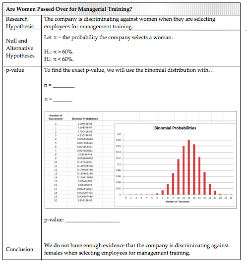
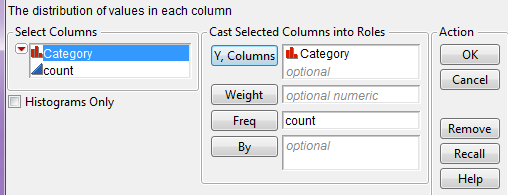

Chapter 4¶
In this chapter, we will consider descriptive methods appropriate for summarizing numerical variables.
{kind=link}
{kind=link}
A new data table should open in JMP which contains only the 87 counties in Minnesota. This is the data file we will consider in this example. We will begin by examining the distribution of Median Household Income, 2007-2011.

JMP returns the following output by default:
{kind=link}
Next, we’ll discuss some of the summary statistics provided in each piece of the output.
Questions:
- Is it necessary that the median be an actual measurement from the data set? Explain.
- Is it necessary that the mean be an actual measurement from the data set? Explain.
- Suppose the maximum value in this data set was changed from $83,415 to $100,000. What impact would this have on the mean? What impact would this have on the median?
Questions:
What percent of counties in Minnesota have a median household income of $44,791 or less?
What percent of counties in Minnesota have a median household income of $52,713 or less?
What percent of counties in Minnesota have a median household income above $52,713?
The 2.5th percentile is about ______________ and the 97.5th percentile is _______________. What proportion of Minnesota counties has a median household income between these two values?
{kind=link}
*MEASURES OF LOCATION *
*MEASURES OF VARIABILITY*
Sometimes a measure of “center” does not adequately tell a data set’s story. For example, consider the median household income across counties for three different states (Minnesota, Wisconsin, and Virginia):
{kind=link}
The following picture shows the average for each state.
{kind=link}
Questions:
- What differences exist in the Typical Household Income values across these three states? Discuss.
- Suppose that your friend tries to summarize the differences across these three states using only the mean (i.e., average) from each state. Do you think that this single summary (the mean) tells the whole story well? Why or why not?
To adequately describe a data set, we must also describe the amount of variability present in that data set. Some of these measures are described below. Also, some of these summary statistics don’t appear by default in JMP. To see them, click on the red drop-down arrow next to “Summary Statistics” and choose “Customize Summary Statistics” as shown below.
{kind=link}
To get the following output, I requested that JMP display both the Range and the Interquartile Range.
Questions:
- How many observations from the data set are used in the computation
of the range?
- Outliers (which we will discuss later) are extreme observations which
need to be handled with care in an analysis. How will outliers affect the range?
- What is the smallest possible value for the range? What does it mean
if the range is at this value?
What percent of the data lies between Q1 and Q3?
Which is more affected by outliers: the range or the IQR? Explain.
Some statisticians advocate that one of the most intuitive ways to measure variability is to consider what’s called the Mean Absolute Deviation.
| Definition |
|---|
| * Mean Absolute Deviation*: For each measurement, calculate how far away that measurement is from the mean of the data set. The mean absolute deviation is the average of these absolute distances. |
To see how this is calculated, first consider the mean for Minnesota:
{kind=link}

Next, we consider the length of each of these distances (i.e., the absolute value of each of the distances) on the following plot. The average of these lengths is the mean absolute deviation.

| Definition |
|---|
* Variance*: For each data point, calculate how far away that value is from the mean of the data set. Then, square each of these distances and add them up. Finally, divide by n-1. Variance:
*
Note: We divide by n –1 because dividing by n tends to underestimate the true population variance.
So, our estimate of the variance is better when we divide by n-1.
*
|
Finally, because the original distances were squared, the variance is in terms of squared units. To get back into the original scale of our data set, we take the square root of the variance.
| Definition |
|---|
* Standard Deviation*: The square root of the variance. Standard deviation: |
The following output shows both the variance and the standard deviation.
Next, reconsider the following three states.
JMP was used to obtained summary statistics for all three:
| Virginia |  |
|---|---|
| Wisconsin |  |
| Minnesota |  |
{kind=link}
Questions:
- Compare each of the aforementioned statistics appropriate for summarizing variability across the three states.
- Which state has the most variability in its county-level median household incomes? The least? How did you decide this?
***¶
{kind=link}
JMP will then open a new data table of which a portion is shown below:
{kind=link}
This will allow us to make comparisons across states. Note that you can select Tables > Sort to sort the results in numerical order. After sorting, we see that the five states with the lowest household incomes as measured by the mean are shown below:
{kind=link}
The top five states are shown here:
{kind=link}
Instead of sorting the data, you could also use Graph Builder to create graphs such as the following. This makes a visual comparison of household incomes across states much easier.

Next, suppose that instead of identifying the highest-earning states, you were more interested in which states have the most problems with income inequality.
Questions:
The map from the previous page will not help you investigate this question. Why not?
What summary statistics will help you investigate income inequality within each state? Explain your reasoning.
Use the following map to identify a few states that appear to have the most problems with income inequality and a few states that appear to have the least problems with income inequality.
{kind=link}
Another look at the household income levels by county in a few individual states:
| Hawaii | Virginia |
|---|---|
Questions*:
Suppose a researcher claims there will obviously be less variability in incomes in Hawaii than in Virginia simply because Hawaii has only 5 counties versus Virginia’s 134 counties. In other words, he or she is arguing that the measures of variability are smaller for Hawaii simply because we have a smaller sample size in that state. Why is this reasoning incorrect? What is the real reason there is less variability in Hawaii?
- Note that when I used JMP to compute the standard deviation for each state to create the map on page 124, JMP did not report this summary statistic for the District of Columbia.
 Why did this happen?
Why did this happen?
*GRAPHICAL SUMMARIES OF NUMERICAL DATA *
In this section, we will discuss common methods for graphing numerical data. Graphs conveniently allow us to examine both the location and the variability in a data set. Moreover, we gain insight into the shape of a data distribution.
*Example 4.3: Graphing Household Income Levels in Minnesota Counties*
In this example, we will once again consider summarizing the median household incomes of all 87 counties in Minnesota. Recall that we’ve already seen a dotplot of these data:* *
JMP does not create dotplots, but JMP can be used to create the following graphics.
To see this, note that we could start with our dotplot and divide the data distribution into the following classes. Then, we can count the number of data points in each interval.


*Density Smoother*
You can use JMP to overlay a density smoother on the histogram. To do this, select “Continuous Fit > Smooth Curve” from the red drop-down arrow next to the variable name. You can control the amount of smoothing with the slider bar.

This curve ignores some of the minor irregularities that may appear in the histogram and provides us with a smooth estimate of the real trends in the data.
*Boxplot*
The procedure for constructing a boxplot is as follows:
- Draw horizontal lines at Q1, Q2, and Q3.
Enclose these horizontal lines in a box.
Find the lower and upper whiskers:
- The endpoint of the lower whisker is the larger of the minimum and(Q:sub:1 – 1.5*IQR).- The endpoint of the upper whisker is the smaller of the maximum and(Q:sub:3 + 1.5*IQR).
Comment: Any measurement beyond the endpoint of either whisker is classified as a potential outlier (an extreme observation).
When you use the Analyze > Distribution platform in JMP, the boxplot appears by default. You can open and close the boxplot by clicking on the red drop-down menu next to the variable name and selecting “Outlier Box Plot.”
{kind=link}
Questions*:
- Are there any counties in Minnesota in which the median household income is unusually low? If so, which ones?
- Are there any counties in Minnesota in which the median household income is unusually high? If so, which ones?
*CDF Plot*
To create a plot of the cumulative distribution function (i.e., a CDF plot) in JMP, select this option from the red drop-down arrow next to the variable name.

This plot allows you to easily determine the percentage of the data that falls at or below a given value on the x-axis. To see this, consider both a histogram of the data and the percentiles which were discussed earlier.
|  | |
|---|---|
{kind=link}
Questions:
- What percentage of counties in Minnesota has a median household income level below$50,000?
- What percentage of counties in Minnesota has a median household income level above$60,000?
*A DISCUSSION OF SKEWNESS*
A data distribution is said to be symmetric if it has the same shape on both sides of the center. Skewness measures the amount of asymmetry in a data distribution.
The distribution is said to be positively skewed or skewed to the right if the measurements tend to trail off to the right. Similarly, a distribution is negatively skewed or skewed to the left if the measurements trail off to the left.
JMP provides a numerical measure of skewness, as well. This measure takes on the value zero when the data distribution is perfectly symmetric; skewness measures greater than zero indicate the data are positively skewed, and skewness measures less than zero indicate the data are negatively skewed. This skewness measure can be displayed by customizing the Summary Statistics section of the output.
We have already summarized the median household income for counties in Minnesota. Next, let’s also consider summaries from two other states, Nevada and Maryland.
{kind=link}
{kind=link}

Questions:
- How would you describe the shape of the distribution of median household incomes in Nevada counties?
- How would you describe the shape of the distribution of median household incomes in Maryland counties?
*Z-SCORES *
A Z-score, often called a standardized value, measures the number of standard deviations an observation is away from the mean of the data distribution. The z-score can be used to transform observations to a dimensionless scale; in addition, it can be used to measure the position of an observation. Z-scores are calculated as shown below:
Interpretation of Z-Scores:
- As mentioned, the standardized values transform the data so that the
data is placed on a standard, dimensionless scale that has a mean of 0 and a standard deviation of 1.
- If a Z-Score is negative, then the observation is that many standard
deviations below the mean.
- If the Z-Score is positive, then the observation is that many
standard deviations above the mean.
If the Z-Score is 0, then the data value is the same as the mean.
- If the Standard Deviation is 0, then the Z-Score is not defined and
thus cannot be computed.
{kind=link}
Questions:
Show how the Z-score for Winona County was calculated:
{kind=link}
- What does this tell you about the relative position of Winona County
in the data set?
*THE IDENTIFICATION OF OUTLIERS*
We have already discussed using boxplots to identify outliers. In addition, we can use Z-scores.
- Any data value whose Z-Score is below −2 or above 2 is considered a potential outlier.
- Any data value whose Z-Score is below -3 or above 3 is considered an outlier and warrants further investigation.
These guidelines come from the following theories.
- *Empirical Rule*: If the probability distribution is bell-shaped
and symmetric, then the Empirical Rule applies. This rule says that APPROXIMATELY…
68% of the values fall within one standard deviation of the mean.
95% of the values fall within two standard deviations of the mean.
99.7% of the values fall within three standard deviations of the mean.
*Image Source: http://threes.com *
{kind=link}
- *Chebyshev’s Rule*: For ANY probability distribution, Chebyshev’s
Rule tells us that AT LEAST…
- 75% of the values fall within two standard deviations of the mean.
- 89% of the values fall within three standard deviations of the mean.
- 1 - 1/k2 of the values fall within k standard deviation of the mean.